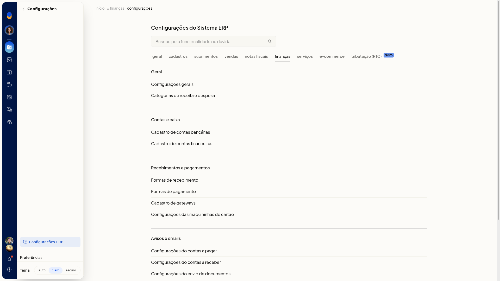
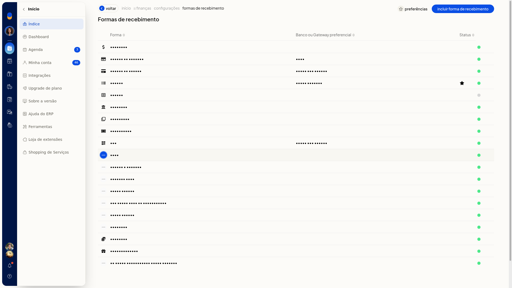
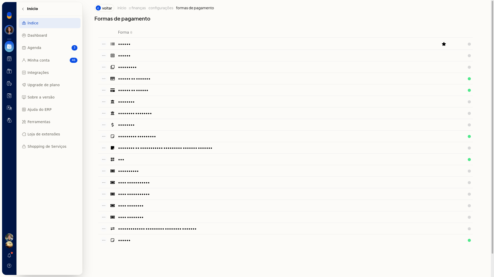
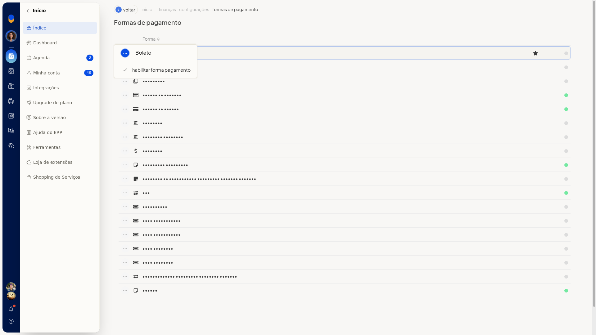

Formas de recebimento e de pagamento
Importante
- Em Formas de pagamento não há botão para incluir uma nova forma nesta tela.
- Banco Inter não é um item próprio deste caminho. Ele aparece como conta financeira e como opção de boleto.
- Os campos da forma de recebimento não são obrigatórios.
Instruções
Incluir uma forma de recebimento
-
Acesse Configurações > Configurações ERP > Finanças > Formas de recebimento. A lista mostra as colunas Forma, Banco ou Gateway preferencial e Status, além de Incluir forma de recebimento e Preferências.

-
Clique em Incluir forma de recebimento.
-
Informe a Descrição, a Situação (Habilitada ou Desabilitada), Validar limite de crédito (Validar ou Não validar), o Destino (Contas a receber ou Conta financeira) e a Tarifação (Sem taxas, Em dia específico, No dia da transação, Dia seguinte ou No dia do pagamento). Há também o campo de tipo de pagamento da NF-e. Uma opção é Pagamento Instantâneo (PIX).

-
Em antecipação, escolha Sem antecipação ou Antecipado. Em Antecipado, informe a Forma de cálculo das taxas (Juros simples ou Valor presente) e os Dias para recebimento.
-
Se a tarifação for Em dia específico, informe o Dia, a conta financeira das tarifas, a categoria, a Tarifa fixa, a Taxa e a Taxa adicional por parcela. Banco Inter aparece entre as contas financeiras.
-
Se o destino for Conta financeira, escolha a conta.
-
Clique em salvar para gravar a forma com destino, tarifas e antecipação definidos.
Definir o banco ou gateway preferencial
-
Em Formas de recebimento, clique em Preferências. Se o primeiro clique mostrar só a dica Configurar meios de recebimento preferenciais, clique de novo para abrir o painel.
-
No painel Meios de recebimento preferenciais, escolha o banco ou gateway de cada meio: Boleto via banco, Depósito, Crédito, Débito, Boleto via gateway, Pix via banco e Pix via gateway. Banco Inter aparece em Boleto via banco e em Boleto via gateway. Pagar.me aparece em boleto e crédito. Stone POS (beta) aparece em crédito, débito e Pix.

Consultar as formas de pagamento
-
Acesse Configurações > Configurações ERP > Finanças > Formas de pagamento.
-
Confira a lista das formas já cadastradas. Não há botão Incluir nesta tela. As formas vistas são Boleto, Cheque, Crediário, Cartão de crédito, Cartão de débito, Depósito, Depósito Bancário, Dinheiro, Duplicata Mercantil, Programa de fidelidade/Cashback/Crédito Virtual, Pix, Vale-troca, Vale Alimentação, Vale Combustível, Vale Presente, Vale Refeição, Transferência bancária/Carteira Digital e Outros.

-
No menu da linha, use Ações ou habilitar forma pagamento para controlar a habilitação da forma.

Resultado
A lista de formas de recebimento mostra cada forma com o banco ou gateway preferencial e o status. O painel Meios de recebimento preferenciais mostra um seletor para cada meio. Em formas de pagamento, você vê as formas disponíveis e o controle de habilitação na própria linha. Não há cadastro de nova forma nessa tela.
Informações adicionais
- Não há importação por planilha neste caminho.
- Em Depósito, a opção vista foi Conta Digital.